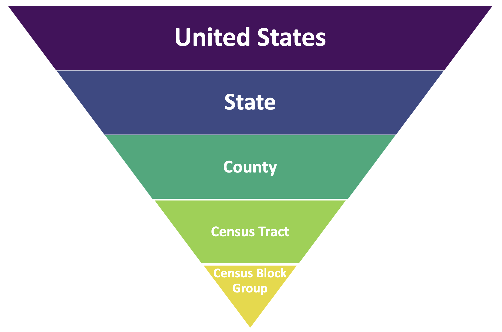

This is a description of our data sources.
We wish to identify associations between walkability and
demographic indicators
health outcomes
Due to the size of the original data files, please download
the datasets according to the links described in our
data.Rmd file and save the .csv files locally using their
original names. Save all .csv files in an RProject folder called “data”
in order to run the code.
Exposure: Walkability
- Data: Environmental
Protection Agency’s information on Walkability Index, 2021
- The National Walkability Index from the EPA provides walkability
scores based on a simple formula that ranks selected indicators from the
Smart Location Database (which summarizes 90 indicators associated with
the built environment) that have been demonstrated to affect the
propensity of walk trips. Currently, the National Walkability Index
dataset ranks each block group relative to all other block groups in the
United States on a scale from 0-20; and data can be aggregated to larger
spatial units using Federal Information Processing Standards (FIPS)
codes.
- Methodology
& User Guide, Codebook
- Variables of interest:
- FIPS code
- National Walkability Index
Confounders: Demographics
- Data: US Census
American Community Survey, 2020
- The American Community Survey (ACS) is an annual, nationwide survey
conducted by the U.S. Census Bureau and produces information on social,
economic, housing, and demographic characteristics about our nation’s
population every year. This information is a vital tool that communities
can use to see how they are changing across the years.
- Methodology,
Codebook
- Variables of interest:
- Age
- Sex
- Race/ethnicity
- Median household income
Outcome: Health Outcomes
- Data: Behavioral
Risk Factor Surveillance System (BRFSS), 2020
- The Behavioral Risk Factor Surveillance System (BRFSS) is an annual,
nationwide system of health-related telephone surveys conducted by the
Centers for Disease Control and Prevention (CDC) which collects
information about U.S. residents regarding their health-related risk
behaviors, chronic health conditions, and use of preventive services.
Established in 1984 with 15 states, BRFSS now collects data in all 50
states as well as the District of Columbia and three U.S. territories.
BRFSS completes more than 400,000 adult interviews each year, making it
the largest continuously conducted health survey system in the
world.
- Methodology,
Codebook
1, Codebook
2, Codebook
3
- Variables of interest:
- High cholesterol
- Physical health
- Blood pressure
- Physical inactivity
- Mental health
Note: Cholesterol and blood pressure status is based on physician
diagnosis, while physical health, physical inactivity and mental health
are based on self-report
Considerations
Spatial Units
For all of our variables of interest, we selected datasets that
contained spatial (geographic) information. To better visualize the
relationship between different spatial units, here is a image showing
the hierarchy:

For each dataset we used, the original spatial unit is:
- National Walkability Index by EPA: on census block group
- Demographic data from American Community Survey: on census tract
level
- Health outcome prevalence data from Behavioral Risk Factor
Surveillance System (BRFSS): on census tract level
- Notes:
- The FIPS code on the census block group level is 12-digits
- The FIPS code on the census tract level is 11-digits
- We used the FIPS code on the census tract level to merge different
datasets
Based on the availability of data and ensuring the comprehensibility
of the visual deliverables, we selected different spatial units for each
component of the project.
Here are the spatial units for each component of this project:
- Exploratory Data Analysis: included analysis on the US, state, and
county level data
- Statistical Analysis: beta regression was ran on the US level
- Interactive Walkability Map: walkability index and health outcome
were analyzed on the county level
- Cluster Analysis: clusters were analyzed on the census tract level
in the 5 counties of NYC
- Dashboard: numbers reflected the walkability, health outcomes, and
demographic data of counties in NY State
Timing
- Walkability dataset is from 2021, Demographic and health outcome
datasets are from 2020
- We assumed that walkability in 2021 is the same as in 2020, since
the last time the walkability index was updated was in 2014